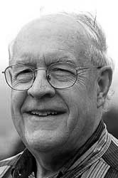

|  |
1999 год Frederick Ph. Brooks, Jr. (1931) «За выдающийся вклад в области архитектуры компьютеров, операционных систем и разработку ПО» |
Страна: США
Образование: Доктор философии в области прикладной математики, Гарвардский университет, 1956
О лауреате
После окончания обучения Brooks был нанят IBM. Он занимался проектированием суперкомпьютера IBM 7090 “Stretch”. Это был первый транзисторный компьютер IBM, в котором было около 150 000 транзисторов. Не смотря на коммерческий провал, проект реализовал множество передовых идей, в их числе предпросмотр инструкций, перекрытие и конвейерная обработка команд, проверку и коррекцию ошибок, а также 8-и битные символы. Следующим проектом Brooks была разработка IBM 8000, мейнфрейма, который стал первым в новой политике IBM развивать одну линию продуктов, не вынуждая пользователей переписывать ПО при смене платформы. Эта линия продуктов была названа System/360. Brooks придумал термин «архитектура компьютера», чтобы обозначить структуру и поведение компьютерных процессоров и связанных с ними устройств, отдельно от деталей какой-либо конкретной аппаратной реализации. Значимость системы невозможно переоценить – она изменила лицо всего бизнеса вычислений и инфраструктуру компьютерных компаний по всему миру. Важнейшим результатом этой экспансии Brooks считал 8-и битный байт, который дал возможность использовать алфавиты нижнего и верхнего регистров.
Ключевые слова: OS/360, The Mythical Man-Month, Virtual Reality
Краткая библиография
| 1. |
Blaauw, G.A. and F. P. Brooks, Jr., Computer Architecture: Concepts and Evolution, Addison-Wesley, Reading, MA, 1997. Текст, описывающий основы архитектуры компьютеров. |
| 2. |
Brooks, F.P. Jr. and K.E. Iverson, Automatic Data Processing, System/360 Edition, Wiley, New York, 1963. Самое подробное и доступное описание архитектуры OS/360. |
| 3. |
Brooks, F. P. Jr., The Design of Design: Essays from a Computer Scientist, Addison-Wesley, New York, 2010. Книга Brooks, в которой изучается значение дизайна программ. |
| 4. |
Brooks, F.P. Jr., The Mythical Man-Month: Essays on Software Engineering, 20th Anniversary Edition. Addison-Wesley, Reading, MA,1995. В этой популярнейшей книгу о разработке ПО описываются прагматичные уроки по разработке сложный программных систем. |
| 5. |
Brooks, F.P. Jr., "No Silver Bullet—Essence and Accidents of Software Engineering," Information Processing 86, H.J. Kugler, ed., Elsevier Science Publishers B.V. (North Holland), Amsterdam, pp. 1069-1076, 1986. Эта широко известная статья по разработке ПО указывает, что в разработке богатых программным кодом систем существуют неустранимые сложности. |
| 6. |
Airey, J., J. Rohlf and F.P. Brooks, Jr. "Towards Image Realism with Interactive Update Rates in Complex Virtual Building Environments," Computer Graphics, Proceedings of 1990 Symposium on Interactive 3D Graphics, Vol. 24, Num. 2, pp. 41-50, Snowbird, UT, March 1990. |
| 7. |
Brooks, Jr., F.P., “Is There Any Real Virtue in Virtual Reality?” Public lecture co-sponsored by the Royal Academy of Engineering and the British Computer Society, November 30, 1994, London. |